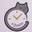
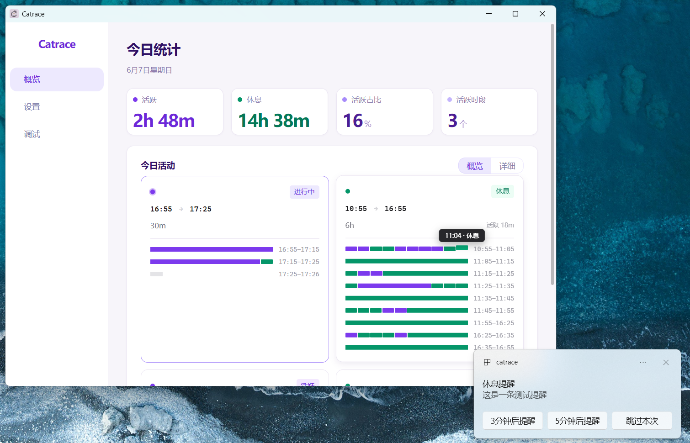

Catrace
用番茄钟总要手动开启？常常忙着忙着就忘了休息？
Catrace 在后台自动监测你的键鼠活动，该休息时轻轻推你一把。
不偷拍、不上传，所有数据只存在你自己的电脑上。
每次工作前都要手动点开始，一忙就忘了。
刚接杯水回来就响，或者已经坐了三小时还没动静。
反应过来时，脖子僵了、腰疼了、眼睛干了。
根据你真实的键鼠活动判断工作状态，该提醒时才提醒。

Dashboard 实时展示今日活动概览与详细时间轴
Catrace 不关心「你计划工作多久」，只关心「你实际坐了多久」。
轻量、自动、可定制，让休息提醒真正融入你的工作流。
不读取按键内容，不追踪鼠标轨迹，只统计活动次数。纯本地运行，隐私零泄露。
自定义工作窗口长度和休息判定时间。连续活跃达标后自动提醒，休息够后自动重置。
系统通知、弹窗提醒、全屏提醒任选。支持「5分钟后」「10分钟后」「跳过本次」灵活控制。
看视频、追剧时自动识别为活跃状态，不误判定为休息，到时间后仍然会提醒你活动一下。
提醒内容可以自定义。不仅可以叫你「休息」，还可以提醒你喝水、拉伸、甚至做一些健康小动作。
今日统计四卡片 + 活动时间轴 + 详细分钟级热力图，一眼看清自己的高效时段和休息缺口。
「以前也用番茄钟，但总是会忘记开启。Catrace 不用手动点开始，开机后就自己跑，真正做到了无感提醒。」
没有复杂设置，安装后就能用。
支持 Windows、macOS、Linux。安装后设置开机自启，即可忘记它的存在。
写代码、写文档、回邮件、看视频……Catrace 会根据你的真实活动自动记录，无需任何操作。
连续工作时间达到设定窗口后，它会用你选择的方式提醒你。去倒杯水、站起来走走，休息够了再继续。